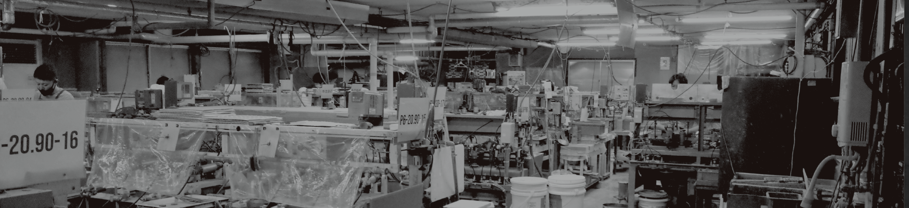
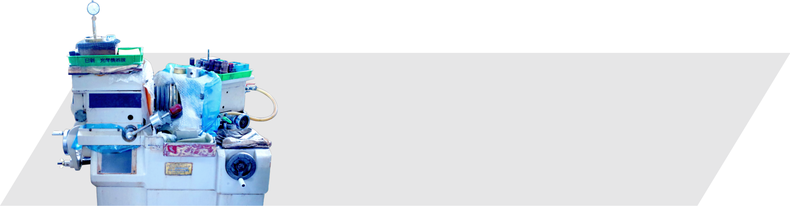
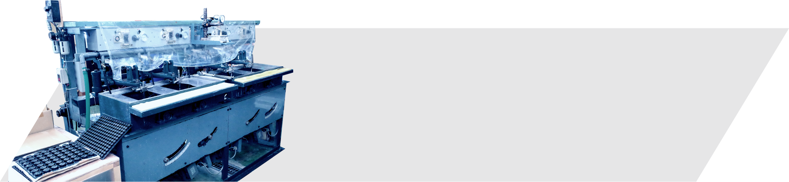
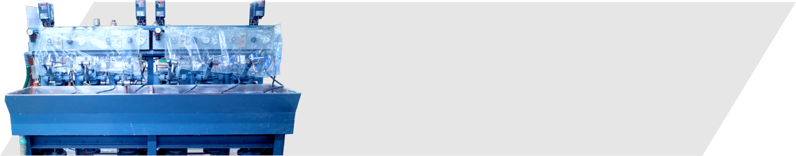
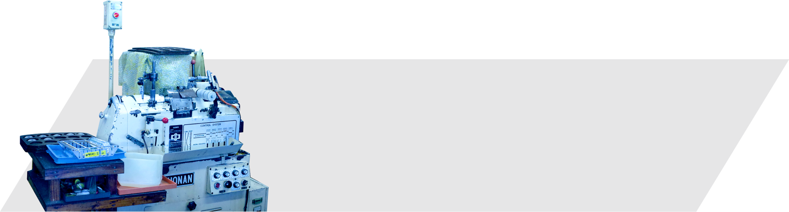
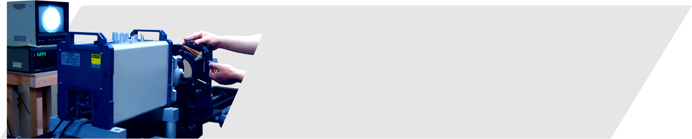
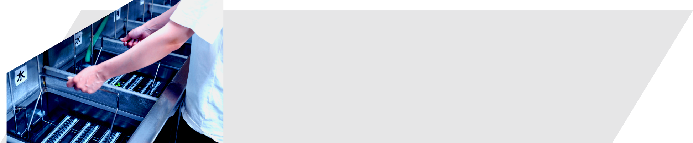

FACILITY 設備一覧
加工設備
CG
- 宇田川鐵工CG機
- 12台
- 1軸
- 湘南光学工業所CG機
- 9台
- 1軸
ペレット
- 倉本製作所高速ペレット機
- 10台
- 4軸
- 倉本製作所高速ペレット機
- 6台
- 2軸
研磨
- 倉本製作所研磨機
- 17台
- 6軸
- 倉本製作所研磨機
- 4台
- 4軸
- 倉本製作所研磨機
- 4台
- 2軸
- 宇田川鐵工研磨機
- 2台
- 6軸
- 宇田川鐵工研磨機
- 1台
- 4軸
- NAGATA研磨機
- 2台
- 6軸
芯取
- 湘南光学工業所芯取機
- 14台
洗浄
- 日本冷機6層型超音波洗浄機
- 1台
- 二層式超音波洗浄機
- 1台
測定器
- Akionレーザー干渉計
- 1台
- FUJINONレーザー干渉計
- 1台
- 透過式偏芯顕微鏡
- 1台
- 京立電機 CS-A1100 偏芯測定器
- 1台
治具加工設備
- 江黒NC旋盤
- 2台
- HAMATEC旋盤
- 2台
- 滝沢旋盤
- 1台
- 北村卓上旋盤
- 1台
- 球芯旋盤
- 1台
- 牧野フライス盤
- 1台
- 進興平面研削盤
- 1台
- アマダコンターマシン
- 1台
- 日立バンドソー
- 1台
- キラボール盤
- 1台
- サンドブラスター
- 1台
周辺設備・付帯設備
-

CG
宇田川製・湘南製のCG加工機を、加工径やレンズ形状に応じて使い分けています。
ばねによる加圧方式で、加工圧、ダイヤモンド工具の回転速度、レンズの回転速度などを調整。
硝材や形状に合わせて加工条件を設定し、幅広いレンズ加工に対応しています。
-

ペレット
カンザシには空気圧で荷重をかけ、回転速度はインバーターを取り付けることで調整できるよう改造しています。
-

研磨
倉本製作所の6軸加工機。
片面3軸同時加工、同時精度調整をおこなっています。
カンザシに空気圧で加重をかけ加工しています。
回転スピードは3軸毎にインバータを取り付け速度調整しています。
-

芯取
湘南光学工業所芯取機。
一部大口径用に改造した機械を使用しています。
加工時に出る粉塵をミストコレクターで集め排気しています。
-

レンズ干渉計
面精度を測定するためのレンズ干渉計を使用しています。
レンズ規格に合わせたTSレンズを各種取り揃え、幅広い曲率の測定に対応しています。
TSレンズで対応できない範囲については、原器による確認を行っています。
-

洗浄
洗剤槽、すすぎ槽、それぞれ超音波装置を入れ汚れを落とします。
最終的に比重管理されたIPAでの仕上げ洗浄後検査へレンズが流れます。